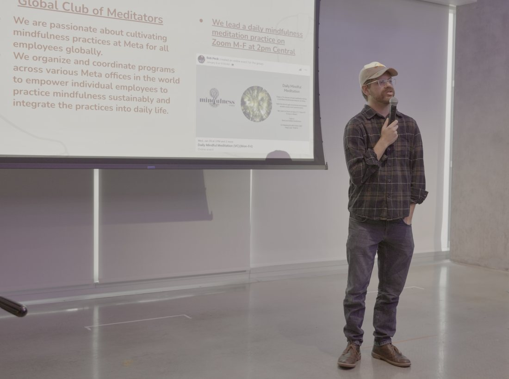

Bob Peck is a writer, filmmaker and producer focusing on mystic spirituality. He holds a B.S. in Radio-Television-Film and a B.A. in Religious Studies from the University of Texas at Austin, and is a certified mindfulness teacher. He is the founder of Teach Wisdom Traditions, which builds curricula and classroom materials on the world's wisdom traditions for schools, educators and facilitators. A frequent guest on spirituality and religion podcasts, he has taught this material in schools, in prisons, and at outdoor patio tables in bars in Austin, Texas.
He spent nearly a decade in tech, at Meta and then TikTok, while writing and filming on the side. Lahiri Mahasaya, the Jnanavatar guru of the modern Kriya Yoga lineage, is quite the example to follow—he gets the teaching, as a father and husband, and then goes back to work as a clerk for a railroad company. Sure, we can find it on a mountain ashram, but can we find it in the Q2 planning meeting?
Mind Heart Lens LLC is the company behind the book, the films and the curricula.

Essays on the mystics
The Gospels, the mystics and the spiritual buffet line.


Having Bob on?
Bios, photos, topics and sample questions, all in one place and ready to use.
Podcasts and films
Guest spots, Karmic Relief, the book read aloud, and the documentaries.
Listen & watch → ShopBooks, course, apparel
The book, the Companion, the Gita course and the tees.
Visit the shop → FacilitateBring it to a group
For churches, circles, programs and studios.
Bring it to a group →